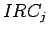

La probabilidad de contaminación de los elementos del medio dependerá del estado de explotación del punto de vertido en el momento de la visita, de las características de los residuos y de las características de desplazamiento que poseen las emisiones del punto de vertido al entrar en contacto con el entorno. Para cuantificar la probabilidad de contaminación a los diferentes elementos se parte de las variables de vertedero definidas anteriormente, que participan en el riesgo de contaminación de cada uno de los elementos del medio.
Todas estas variables poseen una justificación teórica de su consideración, íntimamente relacionada con los procesos de emisiones que tienen lugar en un vertedero. Un análisis de todas ellas va a permitir cuantificar la probabilidad de contaminación para cada elemento del medio entre 0 y 1 y viene dada por la expresión 2.13, en la que n hace referencia al número de variables que afectan a cada elemento del medio2.8 j hace referencia a cada variable analizada,  es el Índice de Riesgo de Contaminación para cada variable y e son los valores mínimos y máximos obtenidos para el Índice de Riesgo de Contaminación para cada variable2.9.